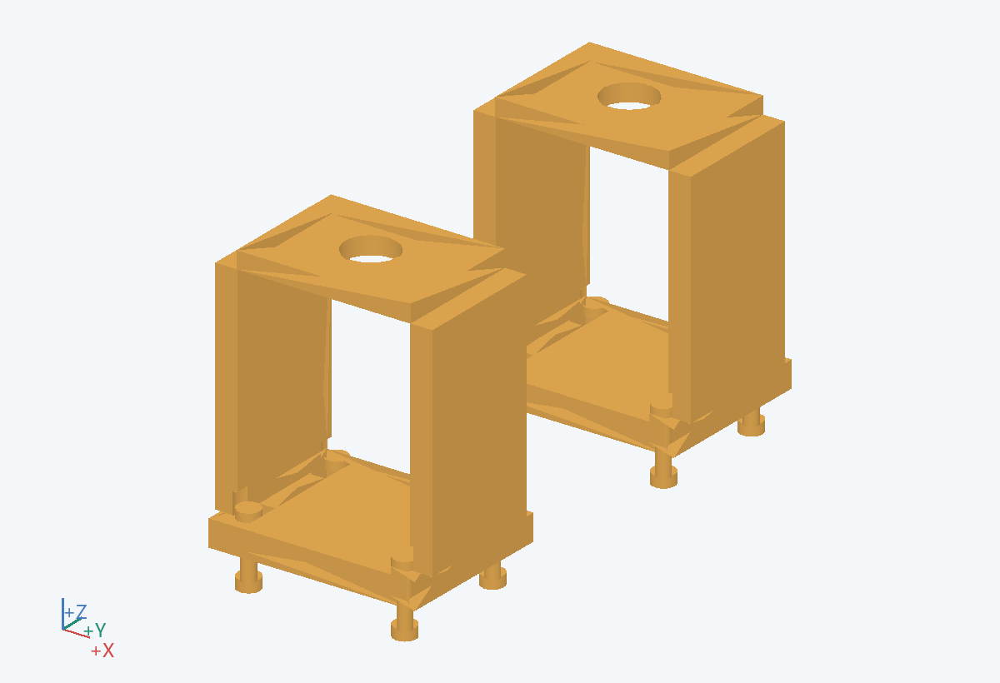
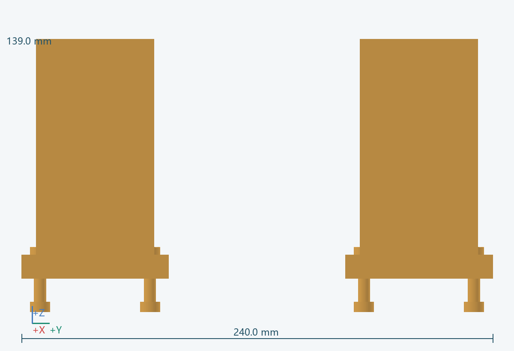
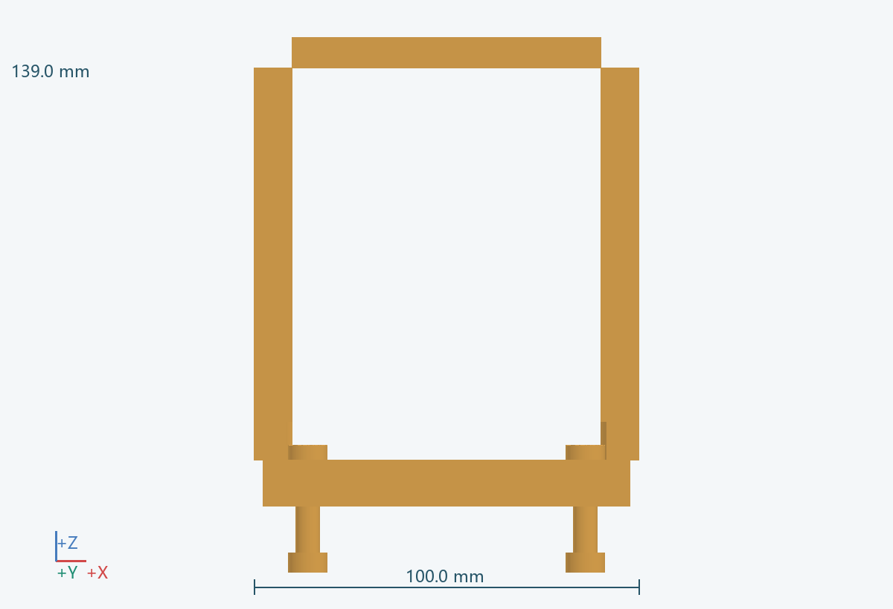
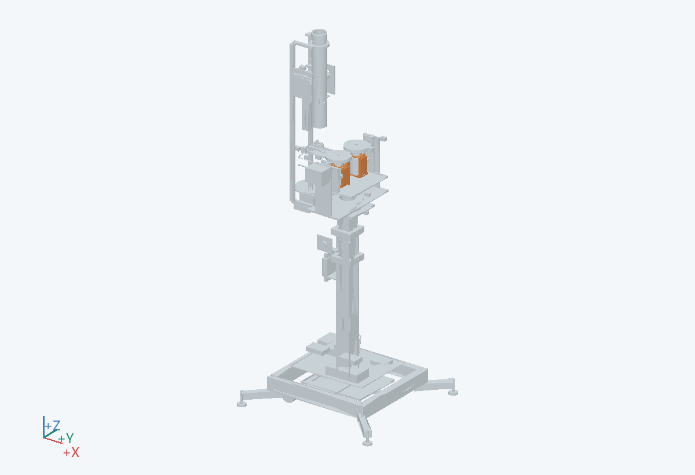

100.0 × 240.0 × 139.0 mm（含所示实例）
对称微调两轮间隙，并在调整后可靠固定。
底部接 0501，上部固定 0503 与电机支撑；紧固与定位功能分开。
铝合金加工件或金属安装板
从侧面松锁紧，按标定夹具对称移动。
25 不是已确认压缩量；根据球头直径、轮胎硬度、磨损和出球稳定性试验冻结。 关联：U02
PRT-0502__L, PRT-0502-A__L-35, PRT-0502-A__L35, PRT-0502-B__L, PRT-0502__R, PRT-0502-A__R-35, PRT-0502-A__R35, PRT-0502-B__R, PRT-0502-FAST__L_-36_-24, PRT-0502-NUT__L_-36_-24, PRT-0502-FAST__L_-36_24, PRT-0502-NUT__L_-36_24, PRT-0502-FAST__L_36_-24, PRT-0502-NUT__L_36_-24, PRT-0502-FAST__L_36_24, PRT-0502-NUT__L_36_24, PRT-0502-FAST__R_-36_-24, PRT-0502-NUT__R_-36_-24, PRT-0502-FAST__R_-36_24, PRT-0502-NUT__R_-36_24, PRT-0502-FAST__R_36_-24, PRT-0502-NUT__R_36_-24, PRT-0502-FAST__R_36_24, PRT-0502-NUT__R_36_24